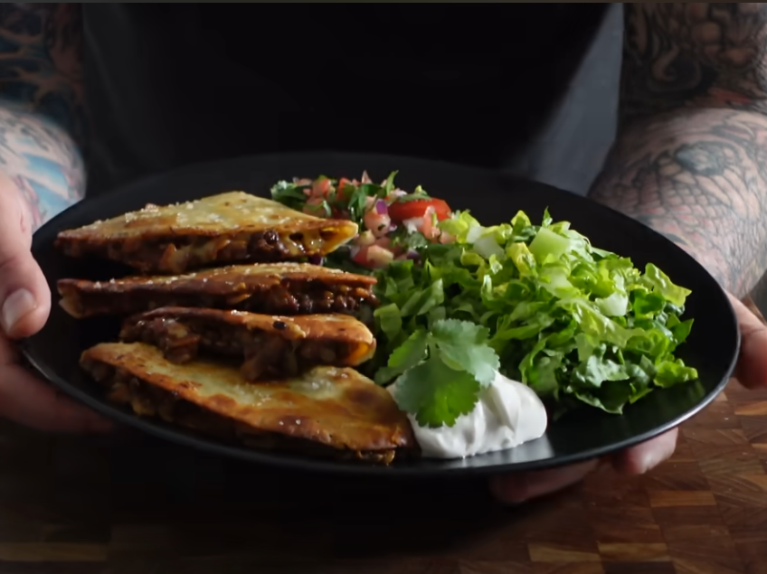

Home
Smash Lentil QUESO-TACOS! (VEGAN)

Ingredients
- 1 Cup DRIED Lentils, washed, rinsed and drained. (green, brown or black lentils work)
- 1 can plum tomatoes (Or any can of tomatoes)
- 2 1/2 Cups water
- 1 Onion, diced.
- 2 Shallots, diced.
- 4 cloves garlic, minced.
- 3-4 TBS Olive Oil
- Handful tortilla chips, crushed.
- 1 ½ Cups Shredded Smoked Vegan Cheese, (Optional)
- 1 Pack small to medium sized tortilla wraps or soft taco shells
- 1 Head Lettuce, shredded.
- 2 TBS Chili Powder
- 2 TBS Cumin
- 1 tsp Onion, granulated.
- 1 tsp Salt, kosher
- 1 tsp Black pepper
Directions
- Add diced onion, shallots, and garlic to a bowl
- Add Olive Oil to medium pan
- Toast spices in Olive Oil
- Sautee ingredients from step 1
- Add cleaned/dried lentils
- Add plum tomatoes
- Add 3 cups of water (TOTAL INCLUDING TOMATOES)
- Bring to boil, then simmer (STIR OCCASIONALLY)
- Remove from heat for 15 minutes and add crushed tortilla chips
- Cool in fridge for 2-3 hours
- Make Pico (See linked Sub-Recipe)
- Once cooled, add cheese to lentils
- Take 1 tortilla, add lentil filling to half and folder over
- Lightly oil and salt pan (To taste)
- Flip
- Repeat 13-15 as many times as needed
Sub-Recipe